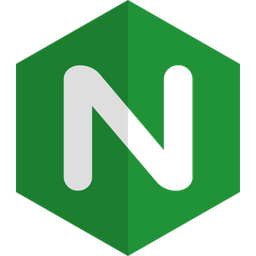

Quer saber um pouco sobre mim?
Tive meu primeiro contato com um computador aos 4 anos de idade e desde então sempre me identifiquei com a área de TI, embora programação nunca tenha passado pela minha cabeça. Talvez isso se devesse ao fato de que antigamente esse assunto não fosse tão comum no meu ciclo social.
O caminho para a programação teve início no ensino médio, onde optei por fazer o curso técnico de informática integrado ao ensino médio. Tive contato com os primeiros algoritmos e fundamentos da programação, mas até então a área com a qual eu mais me identificava era como o famoso "técnico de informática".
O tempo passou e não consegui me firmar como técnico, mas o conhecimento sempre permaneceu comigo. Trabalhei como auxiliar de escritório a maior parte da minha vida e sempre tive a oportunidade de colocar em prática a resolução de problemas diários em relação à informática.
Meu interesse pela programação surgiu quando comecei a estudar no curso de Análise e Desenvolvimento de Sistemas. Foi então que decidi que queria me tornar um programador e fiz da programação minha meta de vida.
Projetos

Landing Page (portfólio)
Landing page clássica do meu primeiro site portfólio
Landing Page (Site oficial)
Site oficial de apresentação da minha aplicação web de agendamento para barbearias.
Aplicação web (Edson Barber)
Site da aplicação de agendamento (lado do cliente) para realização de agendamentos online
Aplicação web (Grau & Corte)
Site da aplicação de agendamento (lado do cliente) para realização de agendamentos online

Bot para envio de mensagens
Api de envio de mensagens de whatsapp que foi implementado na aplicação de agendamento.
Habilidades
Frontend
-
(Angular) Conhecimento em: Componentes, Modulos, Diretivas, Decorators, Serviços, Interpolação de strings, Pipes e Data Binding.
-

(JavaScript) Conhecimento básico e intermediário, como funções assíncronas e consumo de APIs.
-

(TypeScript) Conhecimento em relação as tipagens, classes, heranças, módulos, importações/exportações e transpilação.
-

(Bootstrap) Conhecimento na aplicação das classes do bootstrap.
Backend
-

(Java) Conhecimento nos conceitos e aplicação da orientação a objetos e as particularidades da sintaxe do Java.
-
(Spring) Conhecimento básico em conexão com banco de dados e crud. (Atualmente estudando)
-

(NodeJS) Conhecimento em CRUD utilizando o módulo Express e alguns outros módulos como: Sequelize, Handlebars, Sessions.
-

(MySQL) Conhecimento na conexão, consultas e operações.
Deploy
-

(Linux) Conhecimento na utilização do linux 100% terminal. utilização de uma VPS para manter e administrar arquivos em um servidor linux.
-

(Nginx) Conhecimento em deploy de aplicações e sites utilizando o servidor web Nginx.
-
(PM2) Conhecimento em rodar aplicações em nodejs simultaneamente dentro de um servidor